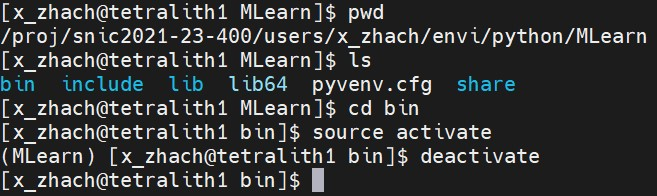

Go back to the main page View
A virtual environment makes modules or packages to be installed confidently and not interfere with another project’s environment. Using following command to create a virtual environment:
python3 -m venv envname
This will create a virtual environment named "envame", which includes basic packages for the environment. Activate this environment, staying in "bin" directory and using following command:
source activate
After activating your virtual environment, the environment name will be shown in front of your command line. In order to add new modules in this environment, use pre-installed "pip" or "pip3":
python3 -m pip install modulename
To deactivate the virtual environment, run the command:
deactivate
